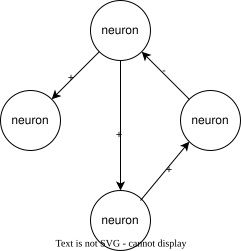
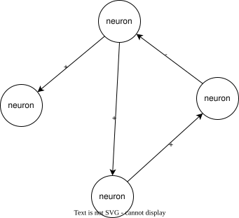
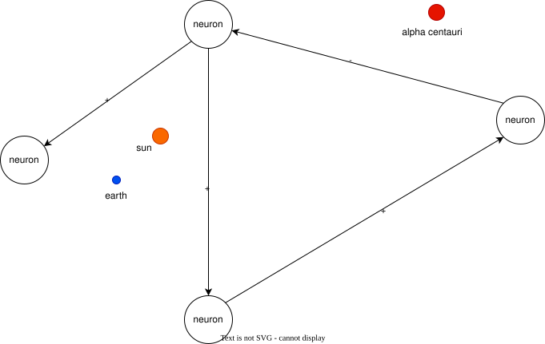

Is consciousness computation?
Or rather, does computation "generate" consciousness? For various reasons, I'm inclined to believe that it does, but I also have what I think is a fairly solid mathematical argument for why it can't, and I actively want to find flaws in the logic of this argument to get to the bottom of this.
LMK#
I am looking for flaws in the logic. In some cases there may be premises I assume to be self-evident, but if they don't seem to be then LMK. If you find a flaw or have a criticism, even better - email me at:
ruling_fiction.0b@icloud.com
Context#
Why do I want to believe that consciousness generates computation?
- If it did, there is a clear path for getting closer to an answer for the hard problem.
- If consciousness could be digitized that would facilitate interstellar travel.
- The available alternatives are unfalsifiable, unactionable, and/or degenerate into circular logic.
Note that this article doesn't present an answer for where consciousness/qualia come from, it only presents an argument for why it wouldn't come from computation.
Consciousness vs. Intelligence
I should also establish that consciousness != intelligence, I assume you would assume I've assumed this premise, but still may as well point it out. While there aren't any great definitions of either, imperfect definitions off the top of my head are:
Intelligence
Given some objective, intelligence is the ability to acquire, retrieve, and process information to reach that objective. The "generality" of intelligence refers to the diversity of environments that can be handled to reach objectives.
Consciousness
If Mary was locked in a monochrome room since birth and taught everything there was to know about the color blue, and then one day you let her out of the room, the thing that she would get from looking at the sky on a clear day that was never conveyed to her in the room is consciousness; it is something other than descriptive information about phenomena, it is the experience of them.
Introduction#
Why would we believe that consciousness generates computation? Let's do a quick recap of neuroanatomy. In your brain, there are ~80 billion neurons.
Here is a diagram of a neuron:
...
And here's the TLDR on how a neuron works.
To propagate a signal, the ion pumps in the wall of an axon open, allowing ions to flow through. This changes the electric charge differential between the inside and the outside of the axon. This charge differential propagates down the axon until it reaches the synapse, wherein either excitatory or inhibitory neurotransmitters are released into the synapse and bind to the next neuron. Excitatory neurotransmitters increase the probability the next neuron will also fire, and inhibitory neurotransmitters decrease the probability.
Here is how we could model a neuron:
Let's assume that this mechanism of action is all that is necessary to model a neuron. It might not be, but that doesn't change the substance of the argument as long as the way it which it isn't can be reduced to a computational process.
Thought Experiment#
Suppose we took your brain (modeled below, other neurons omitted for brevity):

And we spread out the neurons so they were all a little bit further apart from each other in your head, like so:

Everything else continues to function normally, but perhaps it takes you a millisecond longer to choose what to have for lunch or something. Presumably, you're still conscious.
OK, now suppose some type 3 civilization comes down an pushes this experiment to the limit. They take each neuron in your brain and spread it out across a volume such that each neuron is a minimum of one light year from every other neuron. They maintain the structure of your brain, and the infrastructure to support normal operation, and feed in sensory information that perfectly replicates the sensory information your organs were providing you before, operating the system for a very long time.

It might take a long time for you to form a thought, but the computational processes and the medium in which they occur are the same. Presumably, you're still conscious.
OK, now let's suppose that the type 3 civ replaces all the kinesin proteins that walk along microtubules transporting neurotransmitters from the soma each neuron down the axon to the synapse with nanobots that do the exact same thing.
(Tangentially related, check out this video of a kinesin protein walking on a microtubule - they're pretty cool).
The same neurotransmitters are released, the neurological structure is preserved, and the exact
It may seem like I'm leading up to re-explain the ship of theseus or something, but I'm not. I'm simply making the point that in the field of cognitive science and neuroscience there is broad agreement that:
1. Computation is medium independent.
Whether monkeys or neurons it doesn't matter, the process is the same.
2. Computation is isomorphic across arbitrary domains of space and time.
It doesn't matter
3. The computational processes that occur in the brain are responsible for consciousness.
Some finicky neuroscientists might say that I'm claiming something about their opinion overconfidently, perhaps they would say that we can observe strong correlation between the computational processes in the brain and conscious states, but that doesn't imply causation (or something like that).
Perhaps I am, but the intent of this article is precisely to show that this statement must be false, and it is useful as an assumed prior, plus folks do tend to believe this anyways.
On that note: these are the assumed priors for the argument. Given these assumed priors, I will demonstrate they mathematically imply
Implication#
Let's start from the premise that computation does generate consciousness, where does that lead us?
Argument#
Mathematical Reasoning#
Counterpoints#
Other Thoughts#
A case for why time might be involved - model spatial - pages in book
Adam Criticism#
Before it occurs there is a clean separation where the things that are part of the computation and the things which are not are differentiable.
Can you elaborate on what you mean by differentiable?
You can separate it somewhat cleanly into what is a neuron of adam and what is a hair on his head. vs. if you have the same pattern just randomly imprinted on the sun, you can't separate it before it occurs which atom bouncing around which atom is supposed to be part of a neuron and which isn't. if you're looking at my brain when I stub my toe, you can predict the outputs, and the specific components that will provide the outputs before they do, whereas you can't with random atoms There's two separate things where you have something and it's predefined and stuff happens whereas if stuff happens and you cherrypick from that. It's the essence, I'm trying to think of what the essence is. It's the difference between between shooting an arrow at a target and hitting the bullseye and shooting an arrow and painting a bullseye around.
aren't you implicitly assuming structure? what about all the stuff you ignored around the neurons
also, the implication here is still very absurd (it's absurd every way) - that there is a predefined output
there's a difference between computation and random noise - the library of babel has everything, but it has nothing, because the computation is you searching for it what I would say in terms of hamlet is you could take the library of babel and find hamlet, but to get there you have to write hamlet, whereas when shakespeare wrote hamlet there was non-randomness, determinism - it was non-random and it was not a random process, whereas in LoB it could have been in any volume, but with shakespeare you knew it was on his head, it was a confined and orderly process with clear inputs and outputs, vs. the only way to get hamlet out of the lob is to input into the lob
with random noise you can only work backwards, with computation, you can work forwards, with computation, you can make predictions, with random noise, you can't
I think the difference you are suggesting, if I understand correctly, is that when you stub your toe - as in there is a causal event in the vicinity of spacetime we refer to as your toe - we can at that same moment, select another specific and already known region of spacetime known as your brain, and predict with accuracy, that you will feel pain (or any other expected downstream event). Whereas if we have the equivalent sequence of computational operations associated with "toe stubbing" when some atoms randomly bump into each other in the sun, we can't predict which atoms later on in the random noise distributed across the universe and all following spacetime - which atoms will correspond to the same response, it's totally possible that some atoms will, but at the moment of the causal precursor, which atoms will, where they are, and how long it will take are unpredictable.
That is the difference between computation and random noise - BUT - that also implies something really wierd. Because the two processes are the same in terms of causal effects and state changes, it implies that at the moment of any action, some kind of invisible arbiter of computation that generates consciousness steps in, evaluates whether or not some sequence of future actions is predictable, and then somehow sprinkles the magic consciousness juice on the causal event in the present moment.
If it is a closed warehouse with trained monkeys there is pain. If there is an infinite warehouse, trained monkeys, pain. If there is a closed warehouse with untrained monkeys, there is pain. If there is an infinite warehouse with untrained monkeys there is no pain.
What if it was a closed warehouse of untrained monkeys, but several light years away there was a planet with trillions of other monkeys?